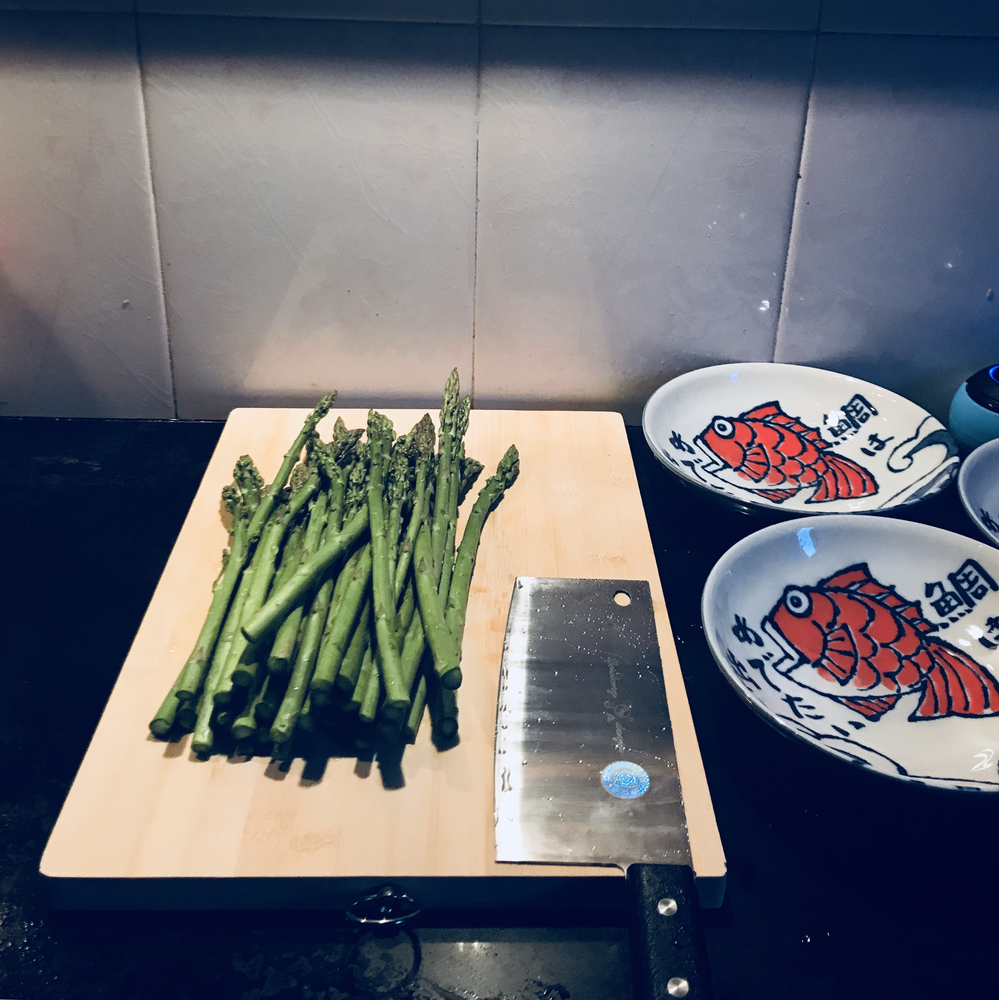

第3(145)周
2018-04-02 23:14:22.872339

1/3 鲜味芦笋
芦笋切段
煮熟沥干
热油下小米椒蒜末姜丝
加盐、生抽翻炒
加适量清水、少许白糖(水少了芦笋不入味)
再倒入芦笋翻炒片刻
即可出锅
芦笋沾汁特别好吃
2/3 红手指
前原、小女孩、松宫、加贺
四个家庭
嫁/娶、养、赡中人性的救赎
前原夫妇对孩子教育的失败
导致其子 诱杀了一个小女孩
而且毫无罪恶感
只会怪罪父母 把事情全部推卸给父母
前原夫妇为包庇其子 抛尸公厕
乃至被警察找到凶案地点后
竟然嫁祸为避开与不孝子、媳共同生活而假装老年痴呆的母亲——
前原政惠
然而一切 前原政惠都看在眼里
一次次挽救前原
直到松宫加贺将要带走前原政惠的生活
前原人性回归
坦白了一切
加贺这种一步步引导
让凶犯良心发现认罪
的办案手法
太人性、太理想化
3/3 简历
两次内推
一次出国